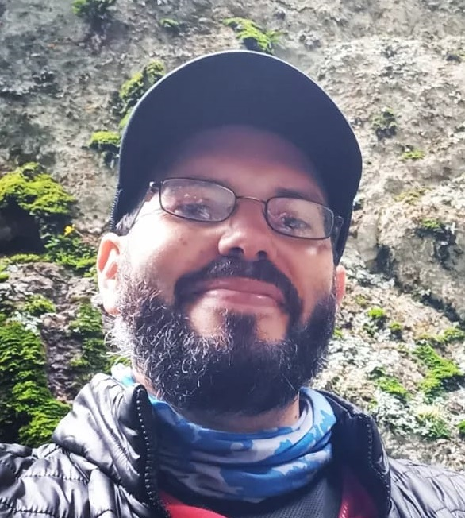
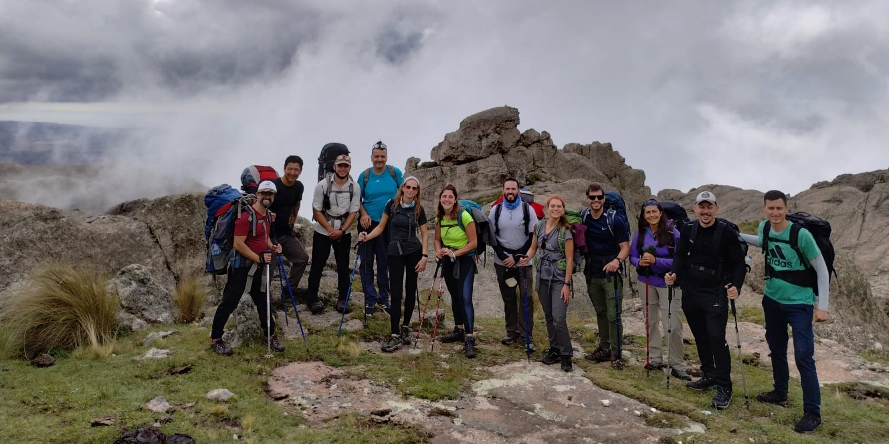
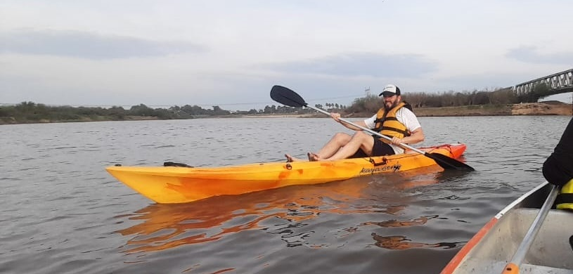

Ezequiel Cattalín
Ingeniero Civil
Sobre mí

Soy un ingeniero civil con experiencia e interés en el ámbito de la programación y la tecnología. Me apasiona desarrollar soluciones innovadoras y eficientes, combinando mis conocimientos técnicos y mi experiencia profesional con un enfoque creativo y orientado a la resolución de problemas. Actualmente, estoy incursionando en el desarrollo de software y la docencia, dos áreas que me permiten seguir aprendiendo, compartir conocimientos y enfrentar nuevos desafíos.
Habilidades
Mas alla del teclado
Me considero una persona curiosa y con una sed constante de aprendizaje. Me gusta explorar nuevas ideas, adquirir conocimientos y encontrar nuevas formas de hacer las cosas. Disfruto especialmente de aquellos proyectos que me permiten combinar creatividad, aprendizaje y la posibilidad de transformar una idea en algo concreto. También disfruto de los desafíos físicos y de las actividades al aire libre, especialmente aquellas que me permiten estar en contacto con la naturaleza y salir de la rutina.


Me atraen particularmente los proyectos que implican aprender haciendo. Un ejemplo de esto es una idea que tengo para el futuro, cuando termine de refaccionar mi casa, probablemente me embarque en el desafío de construir mi propio kayak de madera. Más allá del resultado final, me interesa todo el proceso: investigar, aprender sobre los materiales y las técnicas, resolver los problemas que aparezcan y finalmente convertir un proyecto que comenzó como una idea en algo que pueda utilizar.